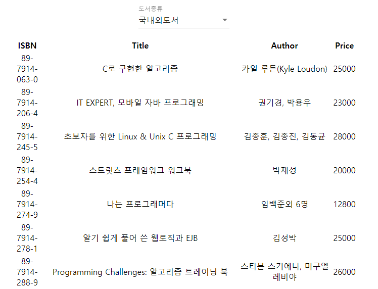

Angular 강좌(7) - 실습(2)
Angular 강좌는 여러 절로 구성되어 있습니다.
- Angular 강좌(1) - Introduction
- Angular 강좌(2) - 개발환경세팅
- Angular 강좌(3) - Component
- Angular 강좌(4) - Angular Material
- Angular 강좌(5) - 실습(1)
- Angular 강좌(6) - Data Binding
- Angular 강좌(7) - 실습(2)
- Angular 강좌(8) - Material Table
- Angular 강좌(9) - Service & RxJS
list-box Component View
이번 포스트에서는 도서 정보를 리스트 형태로 출력하는 list-box Component를 구현해 보도록 하겠습니다.
먼저 HTML Table Element를 이용하여 구현해보겠습니다. 사실 우리는 최종적으로 Material Table Component를 이용할 것이기 때문에 HTML Table Element에 대한 CSS처리는 하지 않았습니다.
여하간 만들어지는 list의 형태는 다음 그림과 같습니다.

더 많은 책이 하단에 쭉 나열됩니다. 상단에는 책의 종류(국내도서, 국외도서, 국내외도서)를 선택할 수 있는 Select 상자가 있고 선택한 조건으로 하단에 책들에 대한 리스트가 출력되는 형태입니다.
먼저 list-box.component.css 파일의 내용입니다. 위쪽 margin을 주기 위한 style을 정의해 놓았습니다.
.example-container {
margin-top: 20px;
}
다음은 list-box.component.html 파일의 내용입니다.
<div class="example-container">
<mat-form-field>
<mat-select placeholder="도서종류" [(ngModel)]="selectedValue">
<mat-option *ngFor="let category of bookCaterory"
[value]="category.value">
{{ category.viewValue }}
</mat-option>
</mat-select>
</mat-form-field>
</div>
<table style="width:100%">
<thead>
<th>ISBN</th>
<th>Title</th>
<th>Author</th>
<th>Price</th>
</thead>
<tbody>
<ng-container *ngFor="let book of books">
<ng-container *ngIf="selectedValue == 'all'">
<tr>
<td>{{book.bisbn}}</td>
<td>{{book.btitle}}</td>
<td>{{book.bauthor}}</td>
<td>{{book.bprice}}</td>
</tr>
</ng-container>
<ng-container *ngIf="selectedValue == 'country'">
<tr *ngIf="book.btranslator == ''">
<td>{{book.bisbn}}</td>
<td>{{book.btitle}}</td>
<td>{{book.bauthor}}</td>
<td>{{book.bprice}}</td>
</tr>
</ng-container>
<ng-container *ngIf="selectedValue == 'foreign'">
<tr *ngIf="book.btranslator != ''">
<td>{{book.bisbn}}</td>
<td>{{book.btitle}}</td>
<td>{{book.bauthor}}</td>
<td>{{book.bprice}}</td>
</tr>
</ng-container>
</ng-container>
</tbody>
</table>
효율적이지는 않지만 코드를 좀 이해하기 쉽도록 위처럼 작성했습니다.
위의 코드 중 다음의 코드부터 한번 살펴보죠
<mat-select placeholder="도서종류" [(ngModel)]="selectedValue">
<mat-option *ngFor="let category of bookCaterory"
[value]="category.value">
{{ category.viewValue }}
</mat-option>
</mat-select>
일단 Angular Material의 MatSelectModule을 사용하기 때문에 app.module.ts에 다음과 같이 import작업부터 해야
코드에러가 나지 않을 듯 보입니다.
import { MatSelectModule } from '@angular/material/select';
mat-select가 Select box에 대한 Component 입니다. 양방향 바인딩으로 selectedValue란 이름의 Component의 속성에
바인딩 시켜놓은 상태입니다. mat-option은 Select box안의 각각의 option요소입니다. 여러개가 존재할 수 있기 때문에
ngFor directive를 이용하여 반복처리 했습니다.
Angular는 구조적 지시자(Structural Directive)라는걸 제공합니다. DOM 요소를 추가하거나 삭제 혹은 반복처리를 함으로 화면의
구조를 변경할 때 사용합니다. 대표적으로는 ngIf와 ngFor가 있습니다. 이름에서 의미하다시피 ngIf는 boolean값을 입력받아
true일 경우 ngIf 가 선언된 Element를 DOM에 추가합니다. 만약 false일 경우에는 ngIf 가 선언된 Element는 DOM에서
제거됩니다. ngFor 는 반복가능한 데이터를 입력받아 반복해서 DOM에 Element를 표현할 때 사용합니다.
Directive에 대해서는 나중에 다른 포스트에서 다시 설명하겠습니다. 여기서는 구조적 지시자로 ngIf와 ngFor를 사용해서 DOM을 제어하는 방식에 대해서만 알아두시면 됩니다.
코드를 보고 유추하건대 bookCaterory는 배열형태의 데이터이고 배열의 각 원소는 객체이겠네요. 데이터 바인딩에서 학습했던
내용과 연계해서 생각해 보시면 됩니다.
코드를 수행시키기 위해 먼저 book.json 파일을 하나 준비합니다. book.json 파일의 내용은 다음과 같이 작성하시면 됩니다.
[
{
bauthor: "카일 루든(Kyle Loudon)",
bdate:"2000년 04월",
btranslator:"허 욱",
bpublisher:"한빛미디어(주)",
btitle:"C로 구현한 알고리즘",
bprice:25000,
bisbn:"89-7914-063-0",
bimgurl:"http://image.hanbit.co.kr/cover/_m_1063m.gif"
},
{
bauthor:"권기경, 박용우",
bdate:"2002년 09월",
btranslator:"",
bpublisher:"한빛미디어(주)",
btitle:"IT EXPERT, 모바일 자바 프로그래밍",
bprice:23000,
bisbn:"89-7914-206-4",
bimgurl:"http://image.hanbit.co.kr/cover/_m_1206m.gif"
},
...
...
...
]
작성한 데이터 파일을 src/assets/data 폴더 아래에 저장합니다. 이 JSON data를 불러오기 위해 HttpModule을 이용합니다.
더 쉽게 파일로 import해서 쓸 수 있지만 여기서는 HttpModule로 처리했습니다.
HttpModule은 현재 deprecated 되었습니다. 현재는 이를 개선한
HttpClientModule을 이용합니다.
app.module.ts 파일안에 HttpModule에 대한 import 구문을 작성합니다.
import { HttpModule } from '@angular/http';
아래는 list-box.component.ts 파일의 내용입니다.
import { Http } from '@angular/http';
import { Component, OnInit } from '@angular/core';
@Component({
selector: 'app-list-box',
templateUrl: './list-box.component.html',
styleUrls: ['./list-box.component.css']
})
export class ListBoxComponent implements OnInit {
selectedValue = null;
bookCaterory = [
{value: 'all', viewValue: '국내외도서'},
{value: 'country', viewValue: '국내도서'},
{value: 'foreign', viewValue: '국외도서'}
];
books;
constructor(private http: Http) {
this.http.get('/assets/data/book.json')
.subscribe(res => this.books = res.json());
}
ngOnInit() {
}
}
약간 이상한 코드가 들어있는데 그 이유는 책의 정보를 가져오기 위해 Http의 get() method를 호출하면서
Arrow Function을 이용해 코드를 작성했기 때문입니다.
위의 내용은 지금까지 우리가 학습했던 내용을 기반으로 이해해보셔야 할 듯 합니다. 기본적인 TypeScript와 데이터 바인딩에 대한 내용을 알고 있으면 충분히 이해 가능하리라 생각됩니다.
참고로 JSON data에서 만약 btranslator 부분의 값이 없으면 이 도서는 국내도서라는 의미입니다.
btranslator에 값이 있으면 번역자가 있다는 말이니까 국외되서가 되겠지요. 그 내용을 가지고 간단한 로직처리를 한 것입니다.
문제점
도서정보에 대한 JSON을 작성해서 실행해보시면 아시겠지만 출력은 잘 됩니다. 하지만 몇가지 문제가 있습니다.
- 책이 100권이 있으면 밑으로 쭉 나열되게 됩니다.
Paging처리를 해야 하는데 이 프로그램을 짜는것 또한 일입니다. Event처리하기가 쉽지 않습니다. 각 행을 클릭하면 해당 책의 세부정보를 detail-box Component를 이용하여 View에 출력해야 합니다. 클릭이벤트를 처리하기가 쉽지 않네요.
이 외에도 Table Header를 클릭해서 리스트를 Sorting하는 것과 같은 일반적인 테이블이 가지는 기능을
우리가 추가로 구현해야되는 문제가 있습니다. 제대로 사용할려면 부가적인 작업이 더 들어가야 합니다.
이와 같은 문제를 Material의 Table Component를 이용하면 쉽게 해결할 수 있습니다. 다음 포스트에서는 도서 리스트를 출력하는 부분을 Material Table Component를 이용하여 다시 작성해 보겠습니다.
End.
Angular 강좌는 아래의 책과 사이트를 참조했습니다. 조금 더 자세한 사항을 알고 싶으시면 해당 사이트를 방문하세요!!
- Angular Official HomePage
- Angular Material Official HomePage
- Build a Mobile App with Angular 2 and Ionic 2
- Angular 첫걸음 - 한빛미디어
- 제대로 배우는 Angular 4 - 비제이퍼블릭